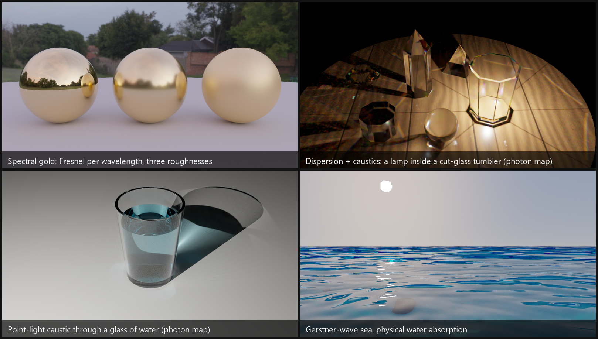

GoLD_rayt
分光レンダリングに取り組む、自作の3Dパストレーサー
卒業研究のために作った C++20 製のレンダラーです。分光放射計(SR-5100)で金を測定し、 RGB と分光レンダリングの色差を Mitsuba で定量化したうえで、その差を克服するソフトを目指しました。
- 金・銅・銀で RGB と分光の差を ΔE00 で比較。金は D65 光源で最大 2.1、金属同士の反射を6回重ねると 12.7 まで拡大
- パストレーシング(NEE+MIS)、フォトンマップによるコースティクス、水・海・肌の表現
- 主要な部分ごとに数値テストを用意し、速度より可読性と検証を優先